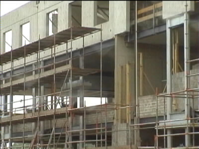

Voortgang bouw PLS - 7 juli 2001
Deze foto's zijn gemaakt op 7 juli. Binnen speelt een fanfare,
3 kilometer verderop speelt Roda tegen Huls.
Het gaat snel met prefab beton-elementen.
In het midden is reeds enig metselwerk zichtbaar.

Nog meer metselwerk.
©KPD